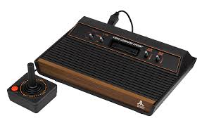
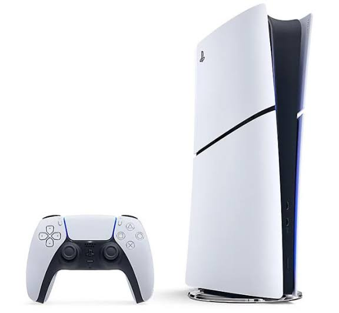
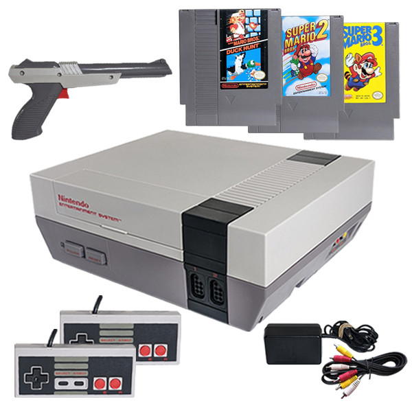
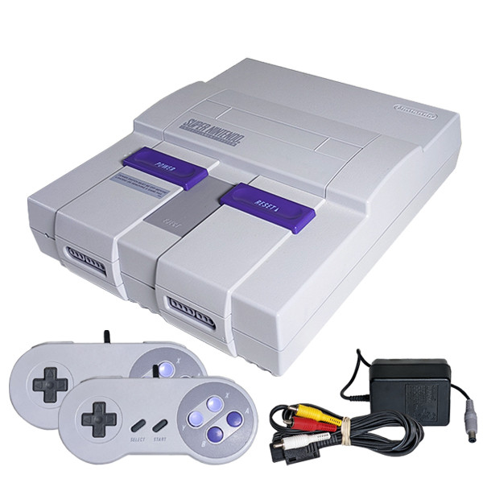
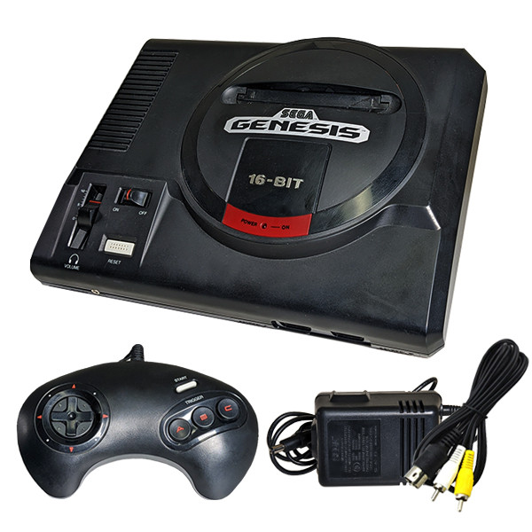
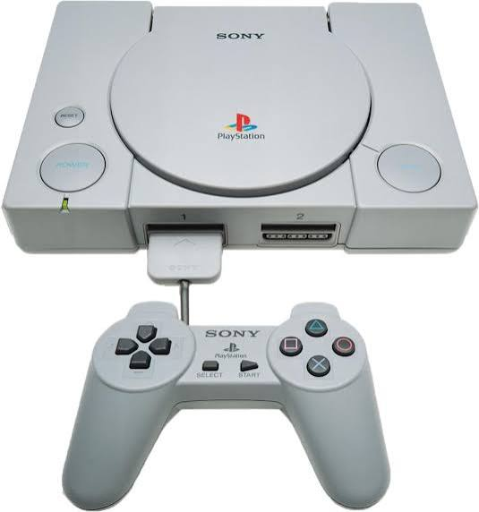
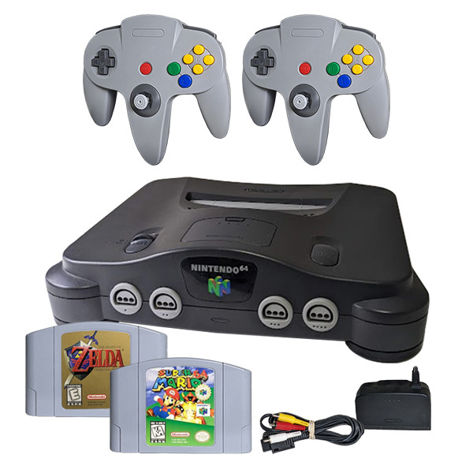
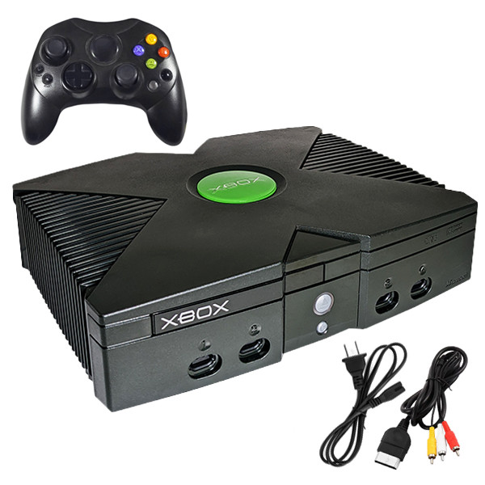

My Collection
As I think about all the video game systems I have owned throughout the years, I really have fond memories of playing different games on each system.

Atari 2600
Atari | 2600
In elementary school, I spent many of hours playing games like Pong and Space Invaders on the Atari 2600. When you look back at the how far the graphics has came it really baffles the mind.

Sony PS5
Sony | PS5
My current console, the Sony PS5, offers incredible performance and a crazy list of games. If there is a certain game genre you can find a game you like. My favorite games are Farming Simulator 2025 and NCAA Football 26.

Nintendo Entertainment System
Nintendo | NES
The NES brought back the joy of gaming for many, including myself. It's where I first discovered the magic of video games and developed a lifelong love for them.

Super Nintendo Entertainment System
Nintendo | SNES
The SNES was the console that took my gaming to the next level. It introduced me to iconic franchises like Super Mario and The Legend of Zelda.

Sega Genesis
Sega | Genesis
Sonic the Hedgehog was the game that had me jump over to Sega Genesis. It was also the first console I played a sports game. Joe Montana Sports Talk Football was the best game I had ever played. I use to spend hours upon end playing football with my friends.

Sony PlayStation
Sony | PlayStation
On the Sony PlayStation the graphics were amazing. I would play RPG games like Final Fantasy and first got into John Madden Football and Grand Turismo.

Nintendo 64
Nintendo | N64
Welcome to the 3d era of gaming. WIth games like Super Mario 64 and Star Fox 64 the graphics were beyond anything that I had ever seen. The games were becoming complexed and actually took much more skill to master.

Nintendo GameCube
Nintendo | GameCube
Although I owned a GameCube, I never really liked playing it as the controller was very uncomfortable but Zelda was the one game I would play for hours at at time.

Nintendo Wii
Nintendo | Wii
The Wii was a game changer for me. I loved the motion controls and the ability to play games with friends and family. It was a great way to get active and have fun at the same time.

Xbox
Microsoft | Xbox
While in my Air Force Tech School I was introduced to Halo. I was impressed by the graphics. It opened up a whole new world of first person shooter gaming for me. I wasn't really good at playing Halo as my buddies would always kill my character all the time but I still had tons of fund playing.

Xbox 360
Microsoft | Xbox 360
My wife and daughters suprised me with an Xbox 360 for my birthday while I was in Oklahoma City attending class for work. I had not played very much video games since my daughters were born but I had a blast playing with the 360* scanner with my daughters on Disney Animal Kingdom Adventures. It was the very first time we played video games together.